CH12-023 — images
【疲労】頑張り癖が抜けない｜頑張るほど壊れる
ep
CH12
Script Viewer
snapshot
guide
台本
音声
サムネ
画像
CH12-023
画像
updated_at: 2026-01-12T23:40:25.903078Z
run_id:
CH12-023
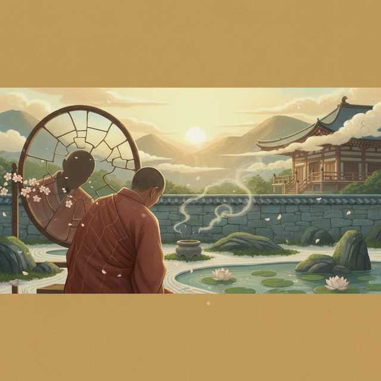
CH12-023
自分が嫌いだ。欠点ばかり気になる。
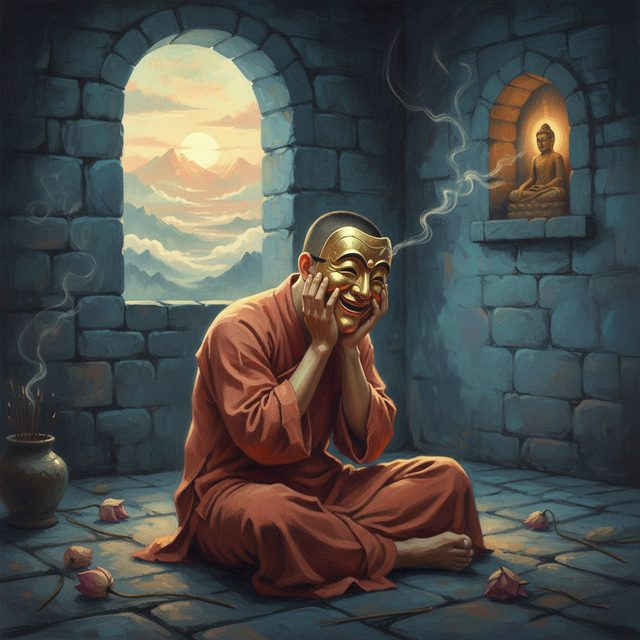
CH12-023
自分を偽り、罵倒し続ける。
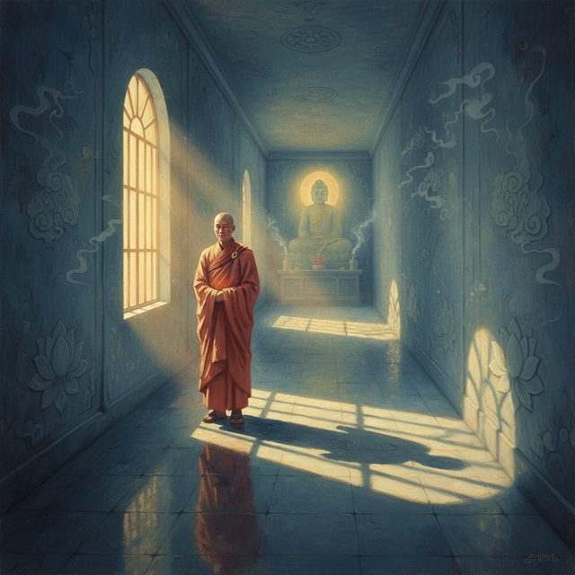
CH12-023
自己否定の監獄。影を消すな。
CH12-023
光と影は共存する。
CH12-023
物語への導入。
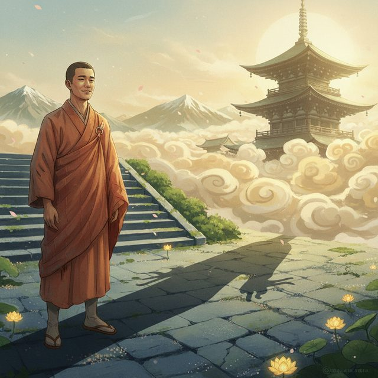
CH12-023
青年ヒカリと彼の悩み。
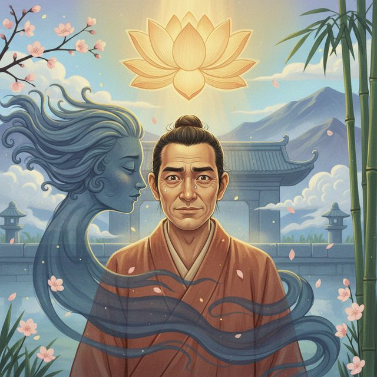
CH12-023
影が本音を喋り出す。
CH12-023
影への憎しみと攻撃。
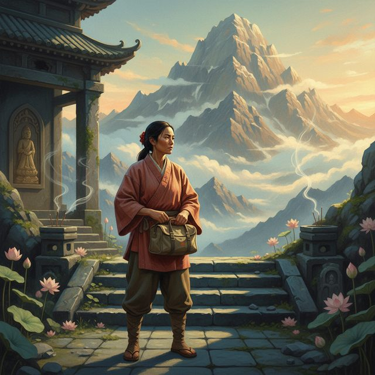
CH12-023
影を切り離す旅へ。
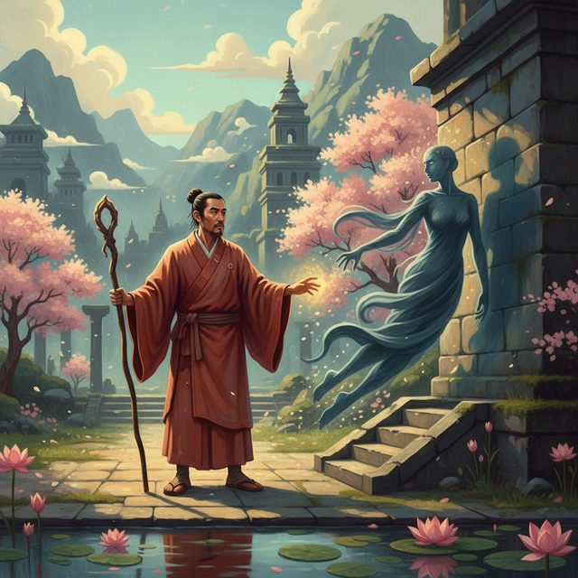
CH12-023
魔法使いの警告と分離。
CH12-023
離れた影と束の間の喜び。
CH12-023
影を失い、透明で感情なく。
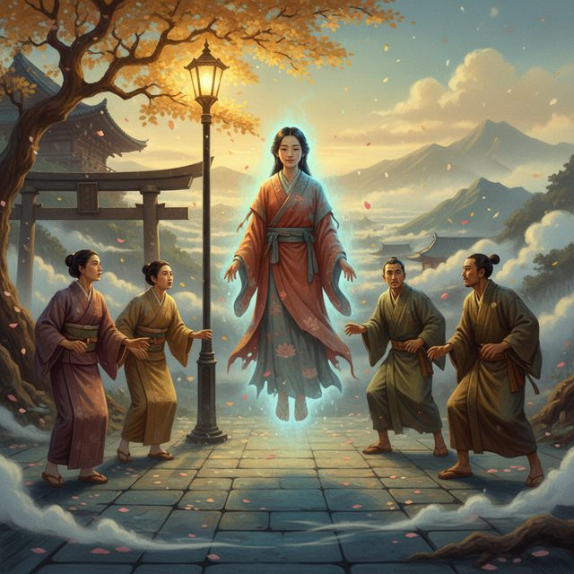
CH12-023
人々の反応と孤独。
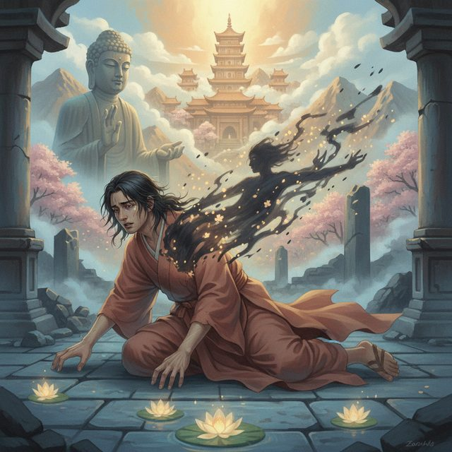
CH12-023
倒れ、気づく。
CH12-023
影の帰還。
CH12-023
体に血が通い、感情が戻る。
CH12-023
影との対話と受容。
CH12-023
影が美しいコントラストに。
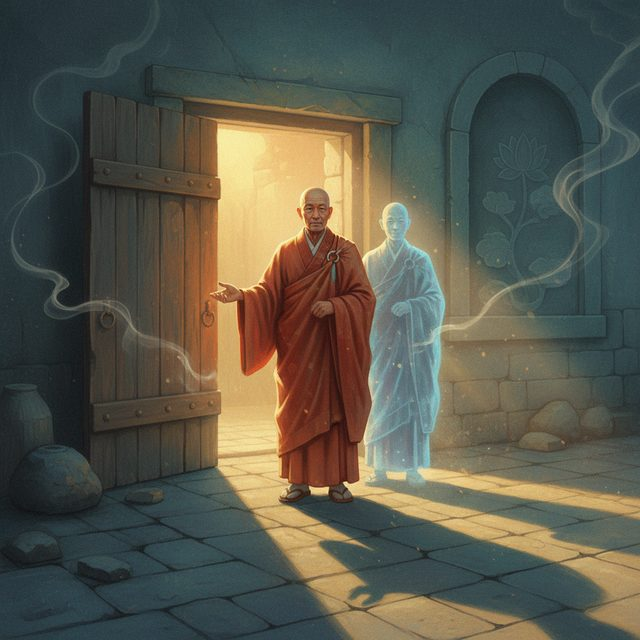
CH12-023
シャドウの概念説明。
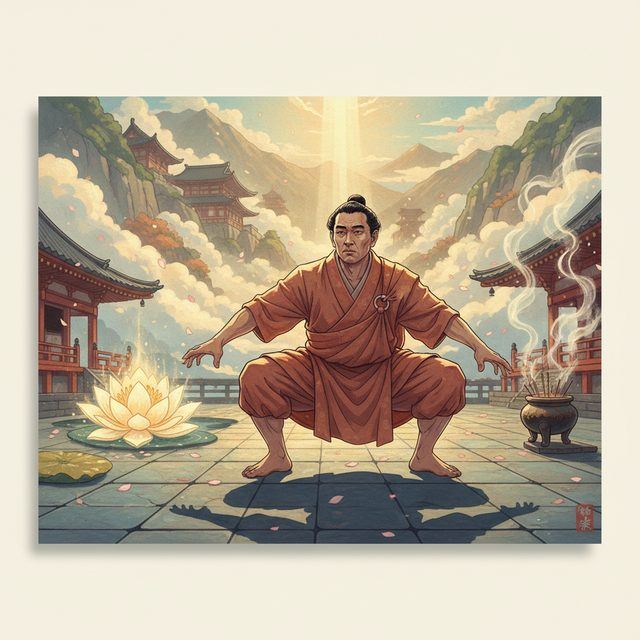
CH12-023
影の投影と内なる戦い。
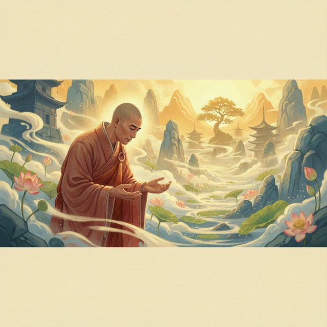
CH12-023
降伏と存在を許す。
CH12-023
欠点は繋がりのフック。
CH12-023
無条件の自己愛へ。
CH12-023
自分への優しい言葉がけ。
CH12-023
コントラストの世界と祝福。